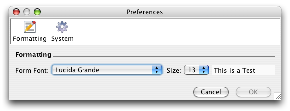

The Formating
This preference enables the font and font size to to be adjusted for the user-interface. Changes in the font settings will only be applied to new Data Set Workspaces and will not effect the Sidebar.
System Prefs
Cache
The Cache stores images locally so they can easily be displayed. Clearing the cache will recover memory on the disk drive and ensure that the newest image will be downloaded.
Version Checking
This preference enables you will be notified at start up if there are any updates available for Specify's WorkBench. Turning this off will not effect any other features of the WorkBench.

Usage Statistics
The WorkBench tracks various user actions and sends the Specify engineering team summaries to enable us to make improvements to the 'user experience' in the future. This feature is completely anonymous, the application is unable to track any user or data specific information. It assists us a great deal if this is left enabled.